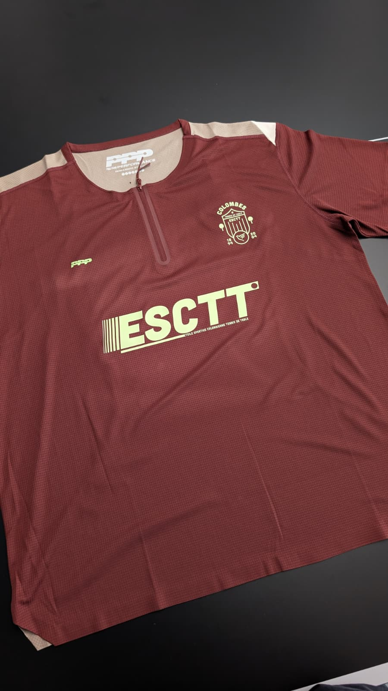
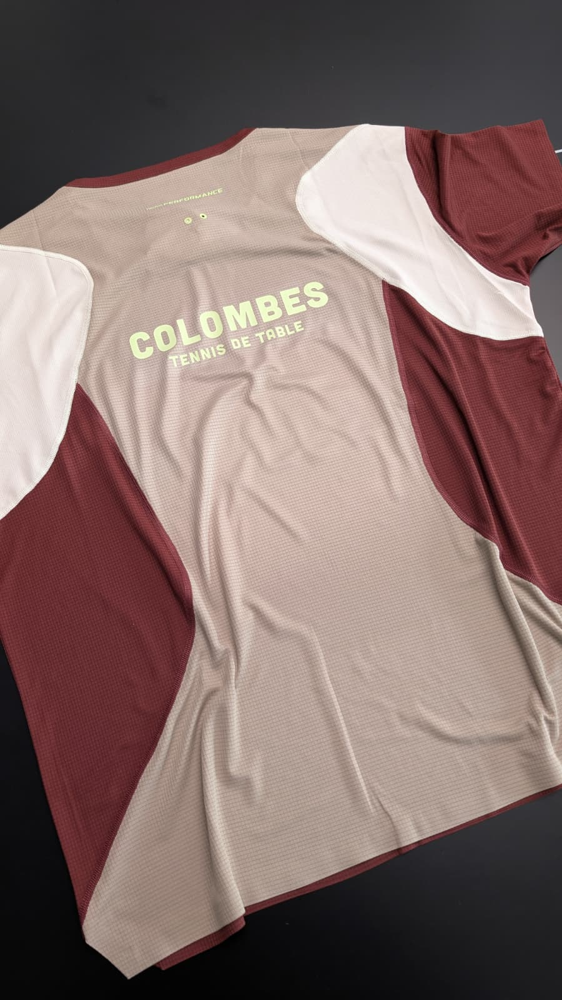

ES Colombienne · étude du maillotNos couleurs,
Nos couleurs,
en volume.
Une forme 3D simplifiée pour juger l’intérêt de l’interaction, à côté des vraies photos.
Prototype jetable
Ni modèle fabricant,
ni rendu photoréaliste.
Essai 3D interactif
Volume approximatif · marquages partiellement reconstitués
Glissez horizontalement sur le maillot, ou utilisez le curseur au clavier. Pas de rotation automatique.
Chargement du volume…
Le vrai maillot


Ce qu’on peut décider ici
L’intérêt de voir le dos et de manipuler le maillot, par rapport à deux images fixes.
Le volume, les plis, les empiècements et certains marquages sont approximatifs. Le grand ESCTT est recomposé en texte, pas repris du fichier d’impression. La coupe et le col ne sont pas reproduits fidèlement.
Un rendu final crédible demanderait un modèle 3D ajusté à la coupe et les fichiers d’impression. Les photos restent la référence de vérité.